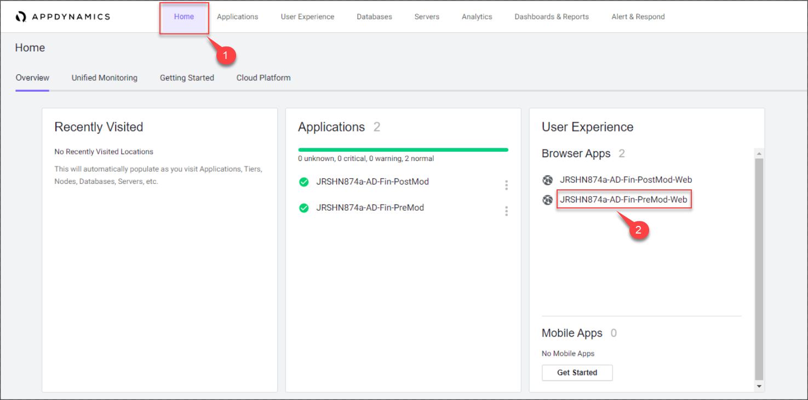
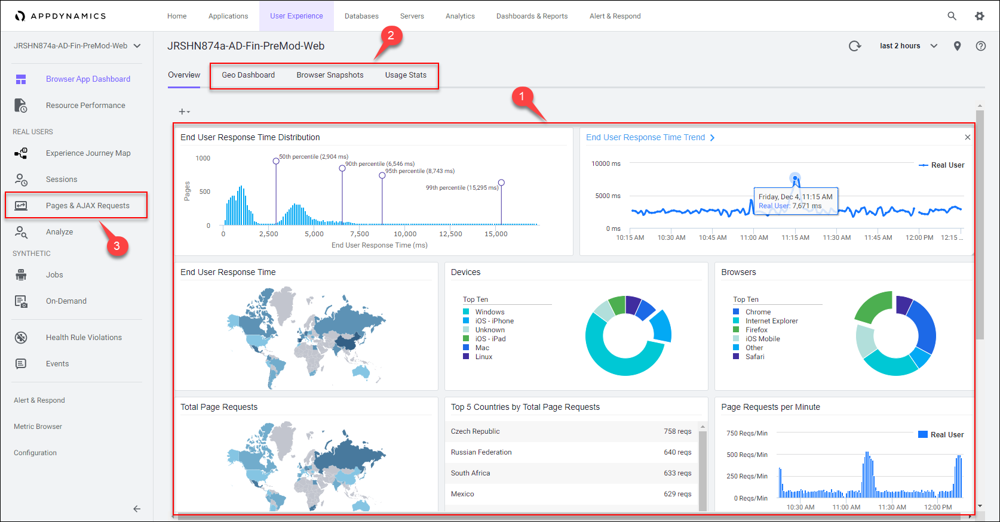
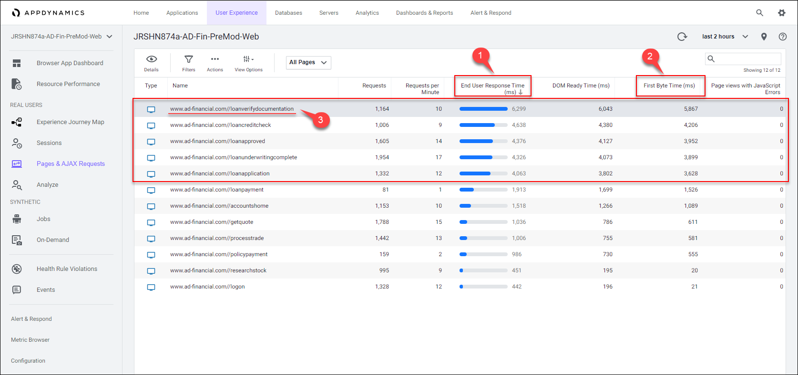
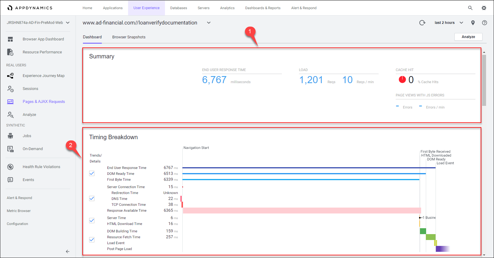
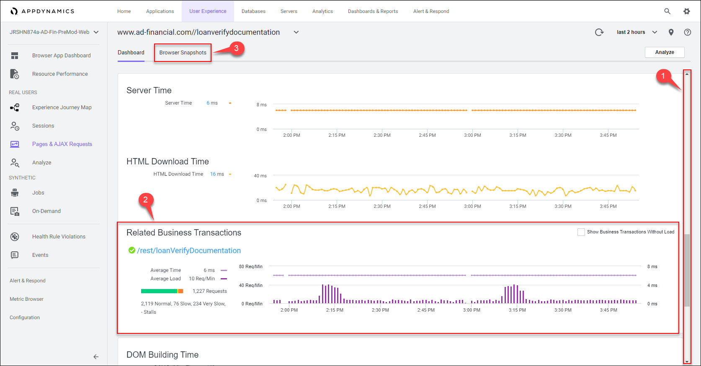
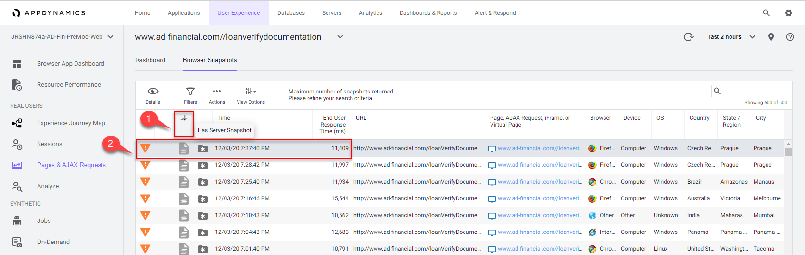
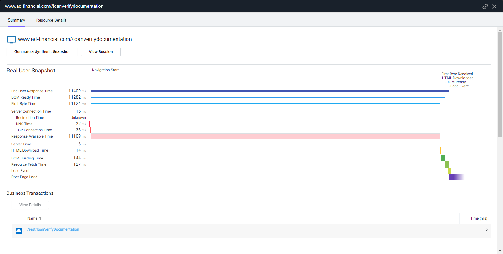
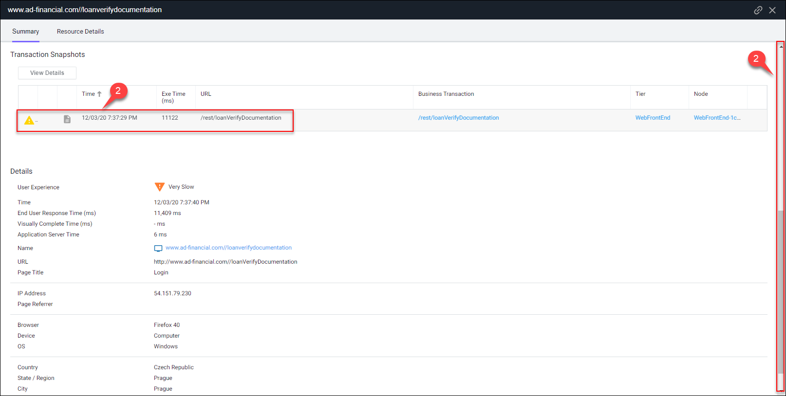
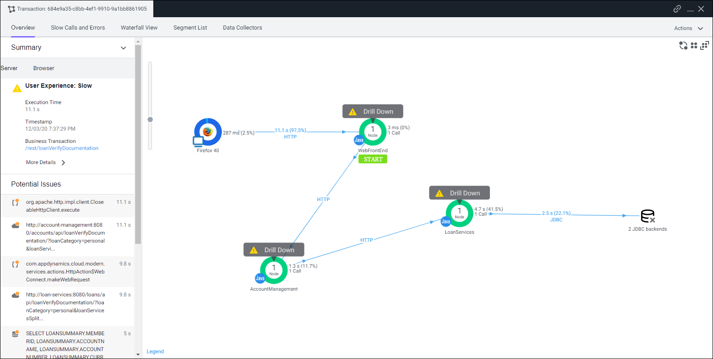
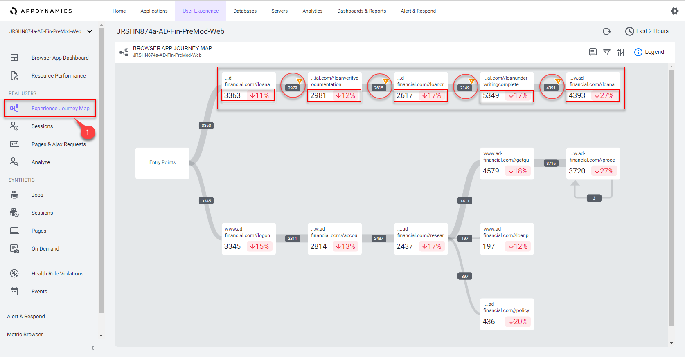

End User Monitoring

The first few challanges Nathan and his team need to address are related to the web frontend
- Differentiating issues in the web UI versus the backend services
- Mapping the web pages to the backend business transactions
- Baselining the end user experience on the web site with:
- End User Response Time
- Drop-off rates in the user journey
Navigate to the BRUM Application
Once you have logged into the AppDynamics controller, you should see the home page. Let’s start by finding the pre-modernized version of the AD Financial BRUM (Browser Real User Monitoring) application and open it using the steps below.
1 . Click on the Home option on the top menu.
- In the User Experience tile, you should see the application named like <your_lab_user_name>-AD-Fin-PreMod-Web
2 . Click on the application name to open the Overview Dashboard for the application.

Browser App Dashboard
The Browser App Overview dashboard displays a set of configurable widgets.
1 . The dashbaord shows key high-level indicators of web application performance, including:
- Page Requests per Minute
- End User Response Time Trend and Distribution
- Total Page Requests by Geo
- End User Response Time by Geo
- Top 10 Browsers and Devices
- Top 5 Pages and Countries by Total Requests
You can read more about the Browser Application Overview dashboard here
2 . Take a moment to explore the:
- Geo Dashboard
- You can read more about the Browser Application Geo dashboard here
- Browser Snapshots
- Usage Stats
- You can read more about the Browser Application Usage Stats dashboard here
3 . Click on the Pages & AJAX Requests on the left to get a breakdown of metrics for each web page including End User Response Time.

Pages & AJAX Requests
We want to identify the web pages that are having errors and or poor end user response times so we can focus and prioritize them if needed.
1 . Sort the list of web pages by the highest end user response time.
- Notice that we see 5 pages with the highest response times, all of them related to the loan approval process
2 . We can tell right away that the high response times are mostly due to the First Byte Time (ms) metric
- Though the DOM Ready Time (ms) metric shows higher timings than the First Byte Time (ms) metric, we’ll explain in the next step why the former metric is more revealing
3 . Double-click on the www.ad-financial.com//loanverifydocumentation page so we can look at the detailed timing breakdown for that page

Base Page Dashboard
The Base Page Dashboard shows you how a web page has been performing over time, within the context of the time range you have selected to view.
1 . At the top of the Base Page dashboard you will see key performance indicators, End User Response Time, Load, Cache Hits, and Page Views with JS errors across the period selected in the timeframe dropdown from the upper-right side of the Controller UI. Cache Hits indicates resources fetched from a cache, such as a CDN, rather than from the source.
2 . In the Timing Breakdown section you will see a waterfall graph that displays the average times needed for each aspect of the page load process. For more information on what each of the metrics measures, hover over its name on the left. A popup appears with a definition. For more detailed information, see Browser RUM Metrics

The First Byte Time metric is important since it tells us how much time was taken from when the page was requested, until the initial part of the response was received from the server or backend. This indicates that the majority of slowness for this page is happening on the server side.
We can see in this example that network latency was an insignificant part of the total response time. We can also see in the waterfall view that the time taken to process the response after it was received and render the page was a small portion of the total time.
You can investigate the other 4 web pages related to the loan approval process to validate the majority percentage of their high end user response times is happening on the backend.
Business Transaction Correlation
AppDynamics automatically correlates the specific business transactions on the server side that are accessed by the Web Page and the AJAX Requests and iFrames within the page. This valuable feature allows you to easily map out the dependencies between the frontend and the backend.
1 . Use the scroll bar on the right to scroll down until you see the Related Business Transactions section.
2 . We can see that this web page is accessing the /rest/loanVerifyDocumentation business transaction.
3 . Now click on the Browser Snapshots tab to see individual requests for this web page.

Browser Snapshots
AppDynamics automatically captures detailed data on each end user request to a web page as well as capturing the entire session containing the path each end user took through the web site. Here we will look at an example of a single end user page request to show you how AppDynamics automatically correlates the entire flow of an end user request.
1 . Sort the browser snapshots on the column named Has Server Snapshot.
2 . Double-click on the browser snapshot that has a associated server snapshot.

You can see that the browser snapshot shows the same waterfall timing breakdown and we notice once again that the majority of the time is spent waiting on the backend to fulfill the request.

1 . Use the scroll bar on the right to scroll down until you see the associated Server Snapshot.
2 . Double-click on the server snapshot to follow the path of the user request to the backend to see why this web page request had such a high response time.

You can drill down through the entire path of the transaction with the server side snapshot to quickly find root cause. We’ll explore server snapshots in more detail when we cover the upcoming section on Business Transactions.

Experience Journey Map
The Experience Journey Map provides real-time insights into application and business performance, visualizing key user journeys and the correlation between performance and traffic. This perspective unifies all application stakeholders, application owners, developers, and IT operations.
1 . Click on the Experience Journey Map on the left to see how AppDynamics automatically maps out the journey that users take through the browser application.
From here we can see the path of the loan approval process to understand:
- the numer of requests for each stage and page in the process flow
- the performance of each stage and page in the process flow
- the drop-off rate from page to page in the process flow

Here’s the Advantage
- Identify and take action on critical issues with the frontend to optimize end user experience.
- Aggregate and display user journeys to understand the most frequent paths through the application.
- Understand the mapping of dependencies between the components of the frontend and the backend business transactions they utilize.
All the dashboards and the browser snapshot views seen in this section are provided OOTB and the content they contain is real-time, dynamic, and reflects the data gathered from the AppDynamics Browser Real User Monitoring Agent.
Takeaways
- We’ve identified the 5 web pages related to the loan approval process having issues
- We have proved the degraded end user response response times for those pages are backend related
- We now have an accurate mapping of those pages to the backend business transactions
- We’ve documented the drop-off rates for each stage of the loan approval process
Next
In the next section we’ll use AppDynamics Flow Maps to dive deeper and gain valuable insights into the backend systems that service the frontend.